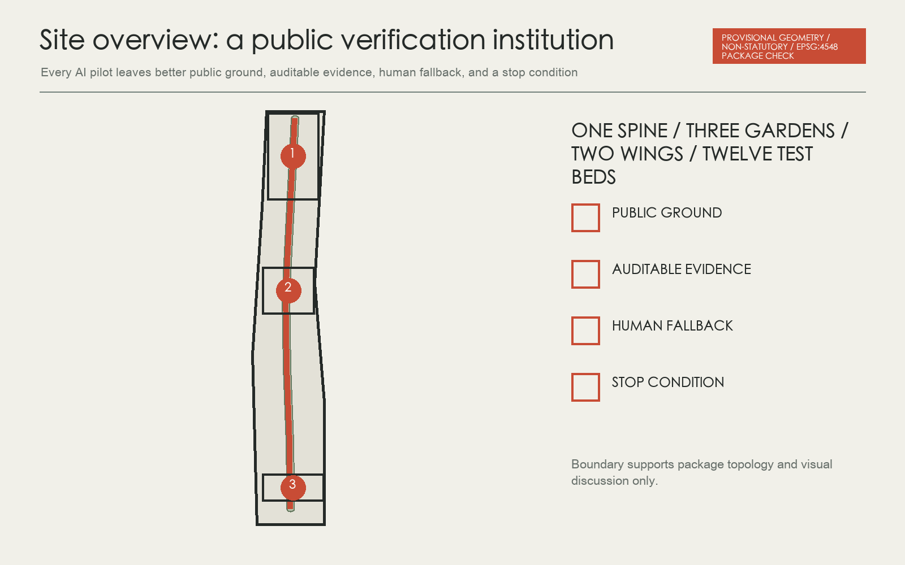
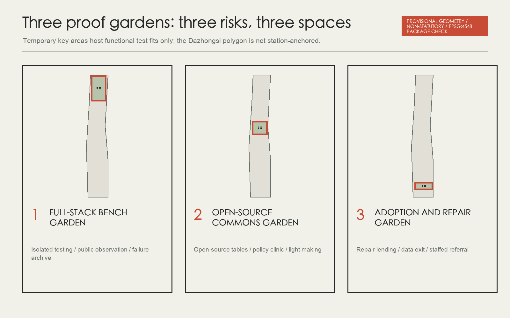
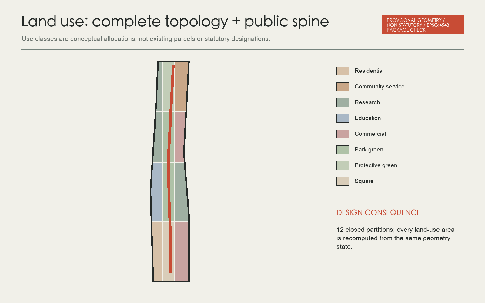
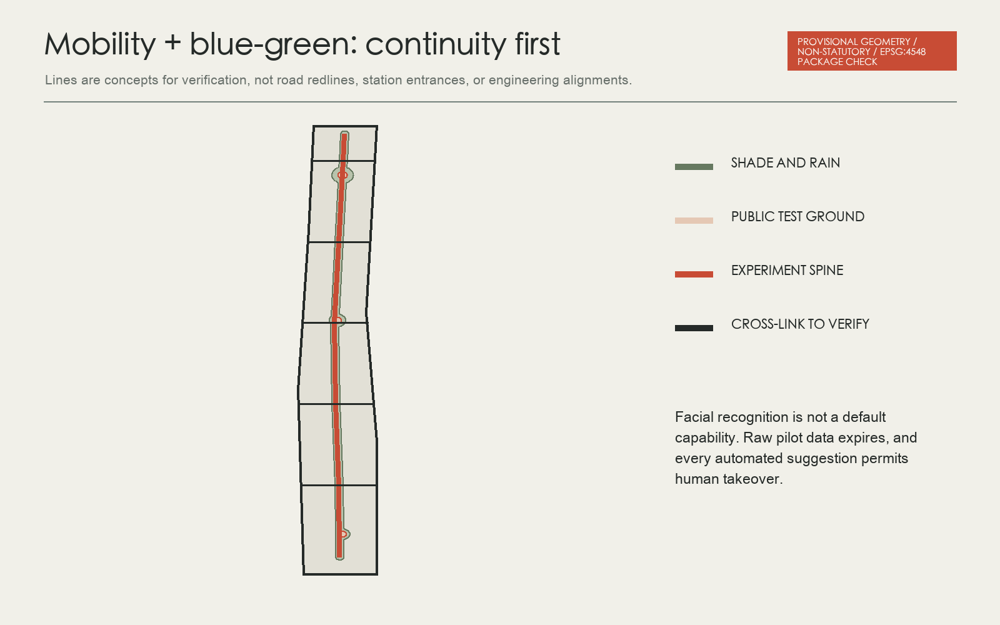
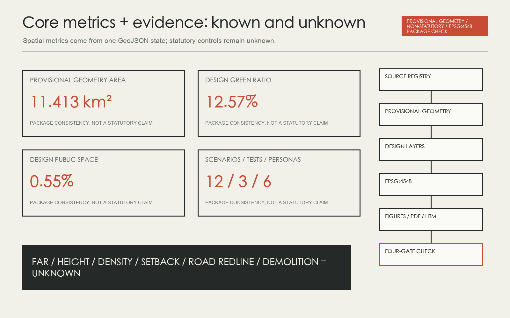

Residents, wheelchair users, and maintainers mark barriers together; AI aggregates issues without tracking individuals.
Overview map
One public experiment spine, three proof gardens, a two-wing network, and twelve everyday test beds share four gates: public improvement, evidence, human fallback, and stop condition.
Provisional geometry, not an official boundary or statutory control

Three-level scope
The strategic scope connects institutions, the overall design organises public ground, and key areas contain higher-risk testing. All share one evidence card and no fabricated precision.
Key areas

Land use
Twelve use polygons cover the provisional site without overlap. They are conceptual allocations, not existing parcels or statutory designations.

Mobility
Continuous walking, accessibility, and safe crossing are tested before smart transport. Every alignment awaits official road and station data.
Blue-green public space

Buildings
Twelve building footprints are functional test fits only. Existing condition, ownership, structure, fire, heritage, height, floors, FAR, and retention all await professional data.
Renewal projects
- PG-01Temporary marking and accessibility audit for the public experiment spineNear-term pilot
- PG-02Lightweight Zhongzhiyuan Bench Garden demonstratorNear-term pilot
- PG-03Origin Open-source Canopy and policy clinicNear-term pilot
- PG-04Dazhongsi Repair Beacon and lending libraryNear-term pilot
- PG-05East-west safe crossings and rain-garden setMid-term connection
- PG-06Bilingual three-garden wayfinding and contribution ledgerMid-term connection
- PG-07Low-carbon edge compute and human takeover nodesMid-term connection
- PG-08Proof Season and resident jury protocolOperations first
- PG-09Official-data replacement and package-wide recomputationTrigger on data release
AI scenarios
Anonymous manual counts and short-term sensors compare walking-cycling conflicts; raw data is deleted when the test ends.
Flags dryness, blockage, and planting damage; maintainers verify before dispatch and no automatic irrigation changes are allowed.
Turns public service information into plain Chinese and English while retaining a staffed counter and paper guide.
Provides public institutions and booking routes only, with no diagnosis, legal opinion, or eligibility decision.
Releases include data licence, model card, reproduction steps, and known failures; contributions enter a reversible honour ledger.
Professional red teams work in isolation while the public sees methods and findings rather than sensitive inputs.
Records task type, energy band, and shutdown condition without exposing proprietary model details.
Offers inspection, borrowing, updating, and recycling routes, with repair before replacement as the default.
Lighting responds by time and aggregate footfall; emergency calls reach people first and facial recognition is excluded.
Helps teams document data origin, exit mechanism, appeal route, and deletion responsibility.
A one-week public walking review links trials, resident juries, open-source releases, and a failure archive.
Core metrics
11.413 km²Provisional machine area
12.57%Conceptual design green ratio
0.55%Conceptual design public-space ratio

Task coverage
Use arrow keys or buttons to check whether a pilot passes four gates. Scale-up discussion begins only after all four pass.
Four-gate checker
Self-check status
This page shows contributor self-check status only; trusted CI or maintainer replay supplies independent provenance. Deterministic, spatial, visual, and professional gates run before submission.
Film transcript and rights
The full bilingual transcript is at assets/media/proof-gardens-transcript.md. The silent film does not autoplay and uses only package cover and figures.
Sources
The announcement, taskbook, registry, provisional geometry, maintainer issues, and seven first-party cases record access date, rights, processing, scope, and uncertainty.
Assumptions
Official boundaries, controls, roads, buildings, ownership, utilities, heritage, and public-service capacity are missing. Statutory intensity, retention decisions, and implementation commitments remain unknown or proposal only.